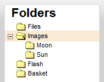
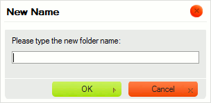
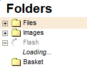

Panel slo啪ek obsahuje "stromov茅 zobrazen铆" slo啪ek, kter茅 m暖啪ete proch谩zet. Slo啪ky jsou pou啪ity k uspo艡谩d谩n铆 a t艡铆d臎n铆 Va拧ich soubor暖.

Zobrazen铆 slo啪ek display je nazv谩no "stromov茅 zobrazen铆" proto啪e hierarchie slo啪ek je zobrazena jako v臎tve stromu a podslo啪ky jsou zobrazeny n铆啪e s odsazen铆m vzhledem k jejich nad艡azen媒m polo啪k谩m. Panel slo啪ek pou啪铆v谩 stejn茅 grafick茅 zastoupen铆, kter茅 m暖啪ete nal茅zt v mnoha modern铆ch opera膷n铆ch syst茅mech.
Abyste slo啪ku otev艡eli a rozev艡eli jej铆 podslo啪ky, klikn臎te na ikonku plus
( ) p艡ed n谩zvem slo啪ky.
Pokud ikona plus nen铆 p艡铆tomna, pak slo啪ka neobsahuje 啪谩dn茅 podslo啪ky.
) p艡ed n谩zvem slo啪ky.
Pokud ikona plus nen铆 p艡铆tomna, pak slo啪ka neobsahuje 啪谩dn茅 podslo啪ky.

Viz 膷谩st "Na膷铆t谩n铆 na po啪adavek" n铆啪e, pokud se chcete dozv臎d臎t v铆ce o procesu na膷铆t谩n铆 v CKFinder.
Abyste zav艡eli slo啪ku a skryli (sbalili) jej铆 podslo啪ku, klikn臎te na ikonku m铆nus
( ) p艡ed n谩zvem slo啪ky.
) p艡ed n谩zvem slo啪ky.

Abyste vybrali slo啪ku a u膷inili z n铆 "sou膷asnou slo啪ku" v CKFinder, klikn臎te na jej铆 n谩zev nebo ikonu. Vybran谩 slo啪ka bude zv媒razn臎na jinou barvou pozad铆.

Pokro膷il茅 operace mohou b媒t provedeny ve slo啪ce pou啪it铆m jej铆ho Kontextov茅ho menu. V z谩vislosti na okolnostech mohou b媒t dostupn茅 n谩sleduj铆c铆 operace:

Pozn谩mka: N臎kter茅 mo啪nosti kontextov茅ho menu mohou b媒t zak谩z谩ny (a proto jsou za拧edl茅), v z谩vislosti na nastaven铆ch CKFinder, kter茅 vy啪aduje V谩拧 spr谩vce syst茅mu.
Abyste vytvo艡ili pod艡azenou slo啪ku uvnit艡 existuj铆c铆 slo啪ky, zvolte mo啪nost Nov谩 podslo啪ka (New Subfolder) z kontextov茅ho menu nad艡azen茅 slo啪ky. V dialogov茅m okn臎 zadejte n谩zev nov茅 slo啪ky, kter媒 bude zobrazen. Jakmile nov茅 slo啪ce d谩te n谩zev a dialogov茅 okno zav艡ete, bude slo啪ka vytvo艡ena.

Ne v拧echny znaky mohou b媒t pou啪ity v n谩zvech slo啪ek a soubor暖 kv暖li omezen铆m
syst茅m暖, kde je CKFinder spu拧t臎n. Mezi znaky, kter茅 nemohou b媒t pou啪ity v n谩zvech
slo啪ek a soubor暖 jsou: \ / :
* ? " <
> a |.
Pro p艡ejmenov谩n铆 slo啪ky zvolte mo啪nost P艡ejmenovat (Rename) z kontextov茅ho menu nebo pou啪ijte kl谩vesovou zkratku F2. Zadejte nov媒 n谩zev slo啪ky v dialogov茅m okn臎, kter茅 bude zobrazeno, co啪 p艡ep铆拧e existuj铆c铆 n谩zev. Jakmile zad谩te nov媒 n谩zev a dialogov茅 okno zav艡ete, slo啪ka bude p艡ejmenov谩na.

Jak ji啪 bylo 艡e膷eno v媒拧e, ne v拧echny znaky mohou b媒t pou啪ity pro n谩zvy slo啪ek a soubor暖 kv暖li omezen铆m
syst茅m暖 kde je CKFinder spu拧t臎n. Mezi znaky, kter茅 nemohou b媒t pou啪ity v n谩zvech
slo啪ek a soubor暖 jsou: \ / :
* ? " <
> a |.
Upozorn臎n铆: Kdy啪 slo啪ku p艡ejmenujete, odkazy 膷i vlo啪en铆 m茅di铆 dostupn茅 na jin媒ch str谩nk谩ch a odkazuj铆c铆 na soubory 膷i slo啪ky uvnit艡 p艡ejmenovan茅 slo啪ky budou po拧kozeny a proto nebudou dostupn茅. Z tohoto d暖vodu bu膹te p艡i pou啪铆v谩n铆 t茅to funkce opatrn铆.
Ko拧铆k je virtu谩ln铆 odkladn茅 m铆sto, kter茅 m暖啪e b媒t n谩pomocn茅, pokud pot艡ebujete prov茅st d谩vkov茅 operace se soubory. Operace kop铆rov谩n铆 a p艡esunov谩n铆 jsou pops谩ny v 膷谩sti "Ko拧铆k" u啪ivatelsk茅 p艡铆ru膷ky.
Abyste slo啪ku smazali, v膷etn臎 jej铆ho obsahu, zvolte mo啪nost Smazat (Delete) z jej铆ho kontextov茅ho menu nebo pou啪ijte kl谩vesu Del. Bude zobrazena potvrzovac铆 zpr谩va, kter谩 zajist铆, 啪e tuto operaci opravdu chcete prov茅st. Jakmile smaz谩n铆 potvrd铆te, slo啪ka bude odstran臎na.
Upozorn臎n铆: Tuto operaci nelze vr谩tit zp臎t. Jakmile slo啪ku a jej铆 obsah sma啪ete, odstran臎n茅 soubory ji啪 nelze obnovit.

Upozorn臎n铆: Kdy啪 slo啪ku sma啪ete, odkazy 膷i vlo啪en铆 m茅di铆 dostupn茅 na jin媒ch str谩nk谩ch a odkazuj铆c铆 na soubory 膷i slo啪ky uvnit艡 p艡ejmenovan茅 slo啪ky budou po拧kozeny a proto nebudou dostupn茅. Z tohoto d暖vodu bu膹te p艡i pou啪铆v谩n铆 t茅to funkce opatrn铆.
Nejd暖le啪it臎j拧铆 rozd铆l mezi CKFinder a stromov媒mi strukturami slo啪ek, kter茅 naleznete ve stoln铆ch opera膷n铆ch syst茅mech je ten, 啪e v CKFinder jsou slo啪ky na膷铆t谩ny na "po啪adavek". To znamen谩, 啪e aplikace nena膷铆t谩 celou stromovou strukturu slo啪ky najednou, ale m铆sto toho na膷te malou 膷谩st, kdy啪 je slo啪ka rozbalov谩na. Tato funkce je pou啪铆v谩na ve v臎t拧in臎 pokro膷il媒ch internetov媒ch aplikac铆 jako CKFinder a umo啪艌uje 拧et艡it p艡enesen谩 data a 膷as pro na膷铆t谩n铆.
Pro ozna膷en铆, 啪e jsou slo啪ky na膷铆t谩ny m暖啪e b媒t zobrazen 拧t铆tek Na膷铆t谩n铆... (Loading..) p艡i rozbalen铆 slo啪ky:

艩t铆tek automaticky zmiz铆, kdy啪 jsou v拧echny po啪adovan茅 slo啪ky na膷teny.